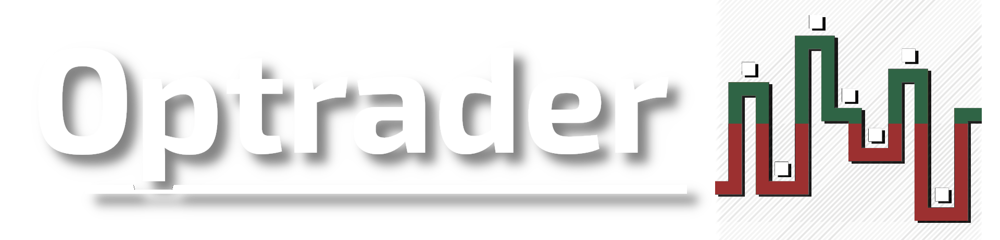

Feito por Daniel Becker Bortoluzzi, da turma BSI 18, do curso Bacharelado de Sistemas de Informação.
Segunda avaliação para a disciplina de Desenvolvimento WEB 1. O intuíto deste website é aperfeiçoar os mecanismos e design, aplicar mais conteúdo e utilizar em conjunto com meu Trabalho de Conclusão de Curso. O domínio www.optrader.com.br já foi comprado.
|  | O site do trader do mercado de opções |